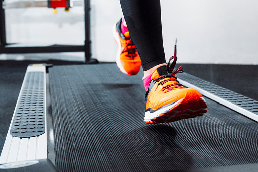

Nueva Cinta CORPLUS para caminar y correr -modelo 2021- que favorece el cuidado de la salud y el cuerpo. Es silenciosa, potente (2.5 hpp), robusta y de base amplia. Sin dudas, la C#MAKE es una de las mejores soluciones fitness para correr en casa.
Motor: 2.0 HP (Continuo); 3.5 HP (Pico). Rango de velocidad: 1.0 ~ 18 Km / Hr. Inclinación de potencia de 15 niveles. Cubierta de amortiguación sin impacto. Plegado manual. Ruedas de transporte incorporadas para facilitar el transporte y el almacenamiento. Gran pantalla LCD con 8 programas preestablecidos
OMIKO 91TK es una cinta creada para realizar ejercicios aerobicos integrales en la comodidad del hogar. Es super completa y muy conveniente. Funciona perfectamente con usuarios de hasta 110 kg. Tiene 9 programas y 3 niveles de inclinación garantizan una exigencia progresiva.
El equipo mas sólido de la marca Fitage. Ideal para gimnasios de gran escala, la cinta motorizada Fitage GYM GC-282 tiene un potente Motor de 5.0 hpp (A.C.) y cuenta con 20 niveles de inclinación y 65 programas que estimulan la evolución física de cualquier deportista, ayudándolo a ejercitarse diariamente.
Randers 070 Stretch Trainer facilita el estiramiento de los músculos dentro de un proceso de calentamiento y relajación, tanto al principio como al final de cada ejercicio.
Corplus diseñó la cinta C#Trainer AC+ para caminar y correr favoreciendo el cuidado de la salud y el cuerpo. Es potente (4.0 hpp), silenciosa y robusta, sin dudas es una de las mejores soluciones fitness para entrenamientos intensivos.

Zellens, es la marca home fitness más segura, confiable y con diseño alemán. ZELLENS BLACK fue la cinta más vendida de la marca Zellens en el último año. Este excelente modelo ZS-1380 incorpora mejoras en su versión 2021 para convertirla en la cinta perfecta para todas las necesidades.
La cinta RUNNER MAX Fitage GC-242 cuenta con una estructura sólida, velocidad hasta 12.0 Km/h, una banda ancha, una gran consola y todos los beneficios de una cinta modelo 2021. Cuerpo plegable, desplegado automático y sistema de amortiguación SoftWalk
Cinta motorizada para caminar y correr con amplia estructura. Cuenta con 3 posiciones de inclinación manual, 12 programas preestablecidos para trabajar. Su monitor controla calorías consumidas, tiempo, velocidad y distancia. Botones de acceso rápido y Amortiguador para desplegar la cinta sin hacer fuerza.